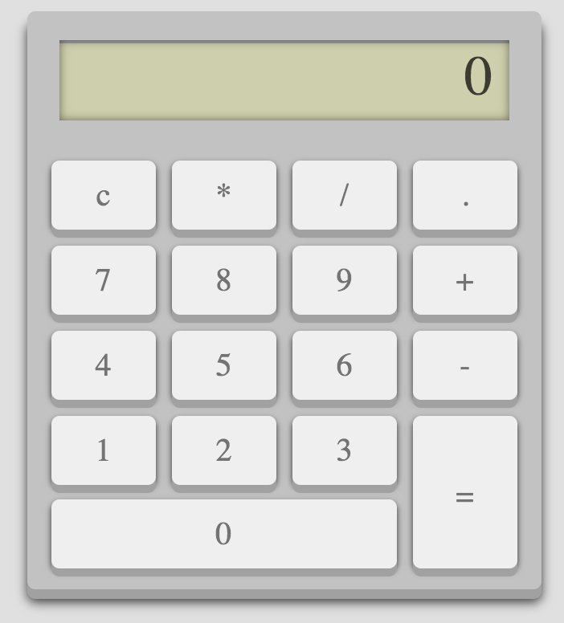
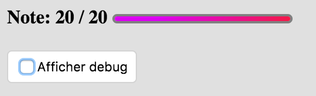
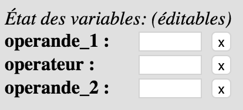
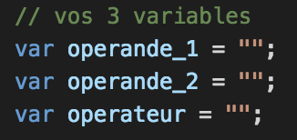

Durée: 3-4h
Cours et TP corrigés autorisés :
https://davidbabel.github.io/
Internet autorisé, documentation etc.
Réseaux sociaux et chats
interdits
Collaboration interdite

Attention à bien être connécté sur VOTRE compte Stackblitz. Sinon vous allez mutuellement écraser votre travail.
Le TP terminé doit être envoyé en zip (export zip dans Stackblitz) via cette adresse. Mettez bien vos noms et prénoms
N'hésitez pas à poser des questions, je ne vous donnerez pas la réponse mais je vous direz vos erreurs.
Si vous ne savez pas écrire une fonction, ce n'est pas que c'est difficile, c'est que vous n'avez pas travaillé.
Le meilleur moyen de trouver le comportement attendu par votre calculatrice, c'est d'ouvrir la calculatrice de windows et de voir comment elle se comporte.
Il est fortement recommandé de lire cet énnoncé et les astuces intégralement avant de vous lancer
- A mesure que l'exercice avance, votre code est testé par codepen et vous donne directement votre note.

- Le code HTML ne doit pas être modifié.
- Le code CSS ne doit pas être modifié.
- Vous pouvez utiliser
$ pour selectionner plusieurs éléments à la fois
- Vous pouvez utiliser
on sur plusieurs éléments HTML à la fois
- Vous pouvez à tout moment tester votre code en cliquant sur le bouton "Afficher debug". Les nouveaux boutons qui s'affichent
alors appellent des tests sur vos fonctions avec des paramètres prédéfinis. Si il y a des erreurs, un message s'affichera
dans la console.
Vous pouvez également consulter et modifier l'état de vos variables principales directement depuis les champs de texte
:

Vous disposez de 3 variables globales. Nous allons les utiliser pour stocker les nombres saisis sur la calculatrice.
Notre calculatrice ne sais faire que des opérations simple avec deux
opérandes et un
opérateur. ( 3 + 5 = 8 )
Ces variables vont donc stocker les éléments de notre opération à savoir: le membre de droite dans
operande_1, le membre de gauche dans
operande_2 et le symbole d'opération dans
operateur

operande_1, operande_2 et operateur sont des chaines de caractères.
Le Stackblitz du TP est disponible à cette adresse sur le cours.
astuce 1: Pensez à réutiliser vos fonctions.
astuce 2: Si vous faites une erreur dans votre JavaScript, toute la suite du code ne seras pas interprétée.
astuce 3: on utilise pas d'accent dans les noms de nos variables ou de fonctions.
astuce 4: Dans les fonctions appellées au click, la variable
this contient l'element HTML qui a été cliqué, comme si vous l'aviez séléctionné avec
$.
1 - Ecrire la fonction
afficher_resultat, elle sera utilisée pour mettre à jour l'affichage de la calculatrice, on l'utilisera dans la suite de l'exercice :
-
Paramètres: Elle prend un seul paramètre de type
chaine de caractère
-
Retour: Elle ne retourne rien
-
Traitement: Cette fonction affiche le contenu de la variable passée en paramètre dans le champ HTML qui possède l'identifiant
"result"
-
Tests et debug: Cliquez sur le bouton "afficher_resultat()" et ouvrez la console pour voir si tout est ok.
2 - PLus tard on va modifier les variables de notre calculatrice pour les utiliser lors de calculs. On veut être capable à tout moment, de revenir à l'état initial de notre calculatrice.
Ecrire la fonction
reset, elle sera utilisée pour remettre à zéro l'état de la calculatrice, à la fois son affichage et sa mémoire, on l'utilisera dans la suite de l'exercice :
-
Astuce: Pensez à réutiliser les fonctions précédentes, ça vous rapportera des points. Cette astuce est valable pour toute la suite de l'exercice.
-
Paramètres: Elle ne prend aucun paramètre
-
Retour: Elle ne retourne rien
-
Traitement: Cette fonction met une chaine de caractère
vide dans nos variables operande_1, operande_2 et operateur et remet à
0 l'affichage du résultat
-
Tests et debug: Cliquez sur le bouton "reset()" et ouvrez la console pour voir si tout est ok. Pour l'instant c'est
votre seul moyen de tester mais patience
3 - Associer votre fonction
reset au clic sur le bouton "c" de la calculatrice. Examinez le code HTML de la page pour trouver cet élément HTML et le cibler
-
Tests et debug: Cliquez sur le bouton de debug "test click reset()" et ouvrez la console pour voir si tout est ok.
Vous pouvez également saisir des valeurs pour vos variables dans le debug et vérifier qu'elle s'effacent bien quand
vous cliquez sur "c"
4 - Ecrire la fonction
get_operateur, elle sera utilisée pour stocker l'opérateur saisie dans la variable "operateur", on l'associera ensuite au clic sur
les opérateurs:
-
Paramètres: Elle ne prend aucun paramètre
-
Retour: Elle ne retourne rien
-
Traitement: Au clic sur un bouton opérateur "+" , "-", "/" ou "*", elle remplira la variable "opérateur" avec le symbole
correspondant. Dans cette fonction, la variable
this contient l'element HTML qui a été cliqué, comme si vous l'aviez séléctionné avec
$
Cette astuce vaudra pour toutes les questions qui suivent cet exercice.
-
Tests et debug: Cliquez sur le bouton "get_operateur()" et ouvrez la console pour voir si tout est ok. Pour l'instant
c'est votre seul moyen de tester mais patience
5 - Associer votre fonction
get_operateur au clic sur les boutons "operateur" de la calculatrice. Examinez le HTML pour trouver ces éléments HTML et les cibler
-
Tests et debug: Cliquez sur le bouton de debug "test click get_operateur()" et ouvrez la console pour voir si tout est ok.
Au clic sur les bontons opérateurs, le champs de debug "operateur" devrait maintenant être mis à jour à chaque fois.
6 - Cette question rapporte le plus de point, mais c'est aussi celle où il faut réfléchir un peu
Ecrire la fonction
get_chiffre, elle sera utilisée pour stocker les chiffres saisis sur la calculatrice, on l'associera au clic juste après:
-
Paramètres: Elle ne prend aucun paramètre
-
Retour: Elle ne retourne rien
-
Traitement:
Lorsqu'on appuie sur une touche chiffre, elle ajoutera le "chiffre" saisie à la suite de l'
opérande en cours.
L'
opérande en cours dépend de la variable operateur :
- Si la variable opérateur est vide, on ajoute la touche saisie à la suite de l'operande_1
- Sinon, on ajoute la touche saisie à la suite l'operande_2
C'est le comportement normal d'une calculatrice.
Attention le contenu actuel de la variable operande ne doit pas être écrasé, on ajoute le nouveau chiffre à la droite
du précédent
Pour finir, cette fonction met à jour l'affichage de l'écran de la calculatrice avec le contenu de l'opérande en cours
-
Tests et debug: Cliquez sur le bouton "get_chiffre()" et ouvrez la console pour voir si tout est ok. Pour l'instant
c'est votre seul moyen de tester mais patience
7 - Associer votre fonction
get_chiffre au clic sur les boutons "chiffre" de la calculatrice. Examinez le HTML pour trouver ces éléments HTML et les cibler
-
Tests et debug: Cliquez sur le bouton de debug "test click get_chiffre()" et ouvrez la console pour voir si tout est ok.
A ce stade vous pouvez déjà tester que votre calculatrice rempli déjà correctement les opérandes et les opérateurs,
et se reset correctement
8 - Ecrire la fonction calculer, elle sera utilisée pour effectuer le calcul avec l'operateur et les operandes courantes et retourner le resultat:
Attention : Pensez à utiliser parseFloat() sur vos opérandes pour faire des opérations avec des chiffres et non des chaines.
- Paramètres: Elle ne prend aucun paramètre
- Retour: le résultat du calcul
- Traitement: Cette fonction n'affiche rien, suivant l'opérateur elle retourne le résultat de notre calcul courant
On récupère alors le resultat du calcul dans une variable que l'on retourne.
- Tests et debug: Cliquez sur le bouton "test calculer()" et ouvrez la console pour voir si tout est ok. Pour l'instant c'est votre seul moyen de tester mais patience
9 -
Ecrire la fonction
calculer_et_afficher, elle sera utilisée pour lancer le calcul et mettre à jour l'interface et les variables de notre calculatrice:
-
Paramètres: Elle ne prend aucun paramètre
-
Retour: Elle ne retourne rien
-
Traitement: Plus tard on associera cette fonction au clic sur "=", pour l'instant on utilisera les boutons de debug pour vérifier qu'elle fonctionne. On va donc reproduire le comportement d'une vrai calculatrice.
D'abord elle affiche le resultat du calcul dans le champ HTML "result", je vous conseil de passer par une variable.
On va ensuite nétoyer tous les champs.
Puis notre fonction va stocker ce résultat dans l'operande_1 pour qu'il soit directement réutilisable
Attention à l'état de vos variables à la fin de l'execution de cette fonction, utilisez le debug pour savoir ce qui
est attendu et pensez à réutiliser vos fonctions
-
Tests et debug: Cliquez sur le bouton "calculer_et_afficher()" et ouvrez la console pour voir si tout est ok. Pour
l'instant c'est votre seul moyen de tester mais patience
10 - Associer votre fonction
calculer_et_afficher au clic sur le bouton "=" de la calculatrice. Examinez le HTML pour trouver cet élément HTML et le cibler
-
Tests et debug: Cliquez sur le bouton de debug "test click calculer_et_afficher()" et ouvrez la console pour voir si tout
est ok.
A ce stade votre calculatrice fonctionne complétement. Mais il reste quelques défauts à corriger
Dans les questions suivantes, on va parfois vouloir quitter la fonction quand une condition n'est pas remplie. Vous pouvez le faire en utilisant simplement un return; dans votre code à l'endroit où vous voulez quitter.
11 -
Problème 1 : On souhaite que le calcul se lance, même si on clic sur le bouton d'un opérateur au lieu du "=" quand toutes nos
variables sont remplies
Exemple:
J'appuis sur "3" puis "+" puis "3". Jusque là rien de fou, j'ai juste rempli mes 3 variables.
J'appuis maintenant sur "-" (au lieu de "=") : je veux que le calcul se lance comme si j'avais cliqué sur "=", et que
l'opérateur stocké soit alors à "-"
C'est le comportement classique attendu par une calculatrice.
réécrire la fonction
get_operateur pour corriger ce problème.
-
Tests et debug: Cliquez sur le bouton "get_operateur2()" et ouvrez la console pour voir si tout est ok.
Essayez de reproduire le scénario saisie au dessus pour voir si tout fonctionne correctement.
12 -
Problème 2 : Si mon operande_1 est vide et que j'appuis directement sur un opérateur, je ne pourrais plus remplir
que l'operande_2
Il faudrait que la saisie d'opérateur soit ignorée tant que l'operande_1 est vide.
Réécrire encore une fois la fonction
get_operateur pour corriger ce problème.
-
Tests et debug: Cliquez sur le bouton "get_operateur3()" et ouvrez la console pour voir si tout est ok.
13 -
Problème 3 : Si je clic sur le bouton "=" alors qu'une des deux operandes est manquante, le programme rate son calcul et affiche
"undefined" en resultat
réécrire la fonction
calculer_et_afficher pour corriger ce problème.
Si il manque une opérande ou l'opérateur, la function retourne "false" -
Tests et debug: Cliquez sur le bouton "calculer_et_afficher2()" et ouvrez la console pour voir si tout est ok.
14 -
Problème 4 : Si je clic plusieurs fois sur le bouton de la virgule "." je crée un chiffre avec plusieurs virgules
On est sympa on vous offre la fonction suivante :
possede_virgule(chaine)
C'est fonction renvoie un booleen:
-
true si la chaine passée en paramètre possède une virgule
-
false si la chaine passée en paramètre ne possède pas de virgule
réécrire la fonction
get_chiffre en utilisant cette fonction pour corriger le problème initial.
-
Tests et debug: Cliquez sur le bouton "get_chiffre2()" et ouvrez la console pour voir si tout est ok.
RENDU - Le TP terminé doit être envoyé en
zip via
cette adresse
Vérifier avec le professeur qu'il a bien été reçu, un TP non reçu à temps sera sanctionné
Bonus - Si le programme affiche 20 / 20 et que vous trouvez un bug je vous paie une bière.
Bon courage